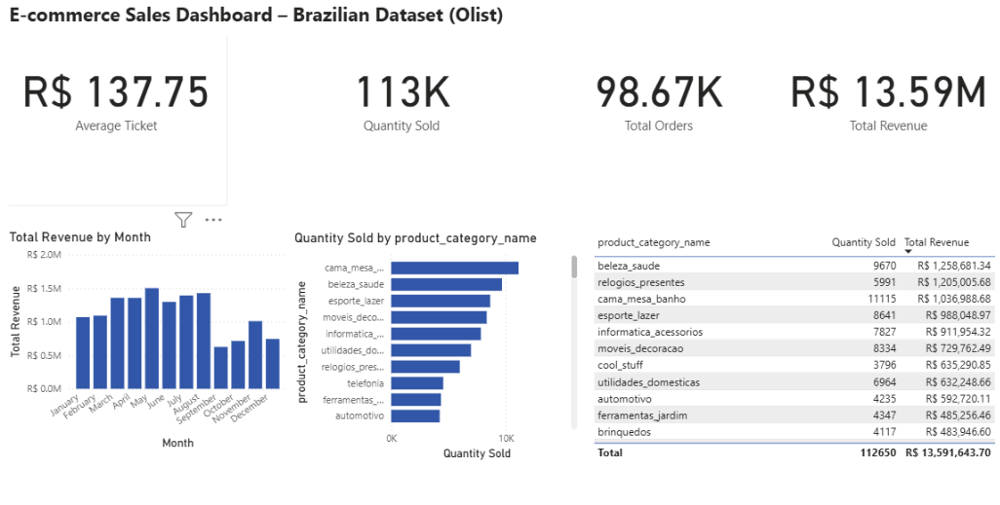

🙋♀️ Sobre mim
- +10 anos de experiência na área comercial e administrativa
- Especialista em visualizações estratégicas e insights de negócio
- Experiência com dados de e-commerce e análise financeira
- Comunicação clara, foco em resultados e mentalidade analítica
📁 Portfólio de Projetos

Análise performance de vendas e-commerce
Dashboard com insights de vendas, metas e desempenho. BigQuery, Power BI, DAX.

Dashboard em PowerBI
Criação de dashboard de desempenho de vendas para uma empresa fictícia - projeto em andamento -

Análise Preditiva utilizando Python
Projeto de pesquisa de mercado utilizando Python para tratamento de dados do Google Trends - projeto em andamento -
🛠️ Skills & Ferramentas
Power BI
Excel
Google Sheets
SQL
Python
R
BigQuery
DAX
Looker Studio
GitHub
🎓 Formação Acadêmica
Análise e Desenvolvimento de Sistemas
Universidade Presbiteriana Mackenzie · 2023–2025
💼 Experiência Profissional
Analista de e-commerce – Mega Store
2023 · Gestão financeira e relatórios estratégicos
Assistente Administrativo – Vitalli Home
2014–2022 · Planilhas, controle e atendimento
📚 Cursos & Certificações
Google Data Analytics Certificate
Coursera · 2024
BI Foundation
CertiProf · 2024
Power BI Business Intelligence e Data Science
DSA Academy · 2024